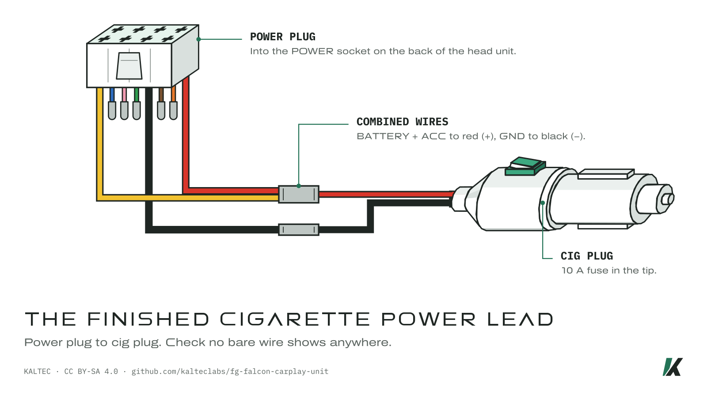

Install guide to build and install your own FG Falcon CarPlay unit for about A$70 in parts, all provided free by KALTEC.
For FG-X and FG MkI and MkII Falcons. Not suitable for FPV.
Install guide v2.0 · 27 Nov 2026 Install guide v1.6 · parts list v1.5 · free bracket v1.6
github.com/kalteclabs/fg-falcon-carplay-unit KALTEC · CC BY-SA 4.0
READY-MADE KITS
Ready-made KALTEC kits and parts, for anyone without a 3D printer or who'd rather not make the power lead. Kits, brackets and harnesses are at kaltec.au, or email aaron@kaltec.au.
Cigarette power kit: head unit fitted in the bracket, cigarette power lead and AUX leadFuse tap power kit: head unit fitted in the bracket, fuse tap power lead and RCA-to-AUX lead
Product
Options
FG Falcon CarPlay Kit (cigarette power)
Wired CarPlay / Wireless CarPlay
FG Falcon CarPlay Kit (fuse tap power)
Wired CarPlay / Wireless CarPlay
FG Falcon Single-DIN Replacement for Tissue Box (the bracket)
Textured / Carbon fibre finish
Cigarette to Power Harness for FG Falcon
Fuse Box to Power Harness for FG Falcon
What's in a kit: a single-DIN CarPlay head unit (wired or wireless), already fitted in the KALTEC bracket (printed in ASA, with HE08 clips fitted, plus spares), an RCA-to-AUX lead, and the power lead (cigarette or fuse tap). A QR card in the box links to the kit guide.
Wired or wireless: both are available. Nothing else differs.
The bracket: black ASA, in a textured or carbon fibre finish. The carbon fibre texture comes from printing the first layer on a carbon fibre build plate.
Harnesses: a power lead plus an RCA-to-AUX lead. They suit most aftermarket single-DIN head units, so if you already have a screen, the bracket plus a harness is all you need.
Shipping: anywhere in Australia or New Zealand. Free pickup in Perth.
Returns: no change-of-mind returns. If anything arrives faulty or not as described, email us and we'll sort it out.
The easiest way. Plug the unit into the cigarette lighter and have a full plug-and-play setup within minutes. It's fully reversible: keep the tissue box, and it goes straight back in.
STEPS 1 → 2 → 3 → 4 → 5 → 6
FUSE TAP POWER
About 30–45 minutes · about A$75 in parts
Attach two fuse taps in your fuse box and hide the cable for a more integrated setup. Keeps the clock and settings, and frees up the cigarette lighter. A little more time-consuming, as you need to take an interior panel off to hide the cable.
STEPS 1 → 2 → 7 → 4 → 5 → 6
TIP
Rather not build it? A KALTEC kit has everything ready, so you just pop the tissue box out and plug it in. Kits are at kaltec.au, or email aaron@kaltec.au. Prices are on the kits and parts page, and kit owners can follow the shorter kit guide.
Otherwise, the DIY setup needs a power lead, the 3D printed bracket (file provided free) and your head unit of choice. Follow the steps below to get up and running.
KALTEC · github.com/kalteclabsFG Falcon CarPlay unit · Install guide
Cigarette lighter power: a cigarette male plug lead
Fuse box power: 2 mini blade fuse taps, a 10A and a 5A mini blade fuse, about 2 m of extra wire
TOOLS
Wire strippers
A heat gun or lighter, for the heat-shrink
Fuse box only: crimpers, for the fuse taps, and an 8 mm socket for the ground bolt
Optional: a plastic trim tool
Optional: a multimeter or test light
You'll also need a KALTEC bracket (kaltec.au or aaron@kaltec.au; see kits), or a 3D printer and ASA or ABS filament to print your own.
KALTEC · github.com/kalteclabsFG Falcon CarPlay unit · Install guide
PARTS LIST
Building this yourself costs about A$70 in parts, head unit included (A$65–75 depending on how you power it). Most of that is the head unit itself (about $50). Prices are in AUD. The links are the exact parts we used. Copy the search term into AliExpress for the current cheapest options.
Any head unit works, as long as it's single DIN: the standard 18 × 5 cm size, not double DIN.
Single-DIN CarPlay head unit
NOTE
Wireless CarPlay is worth the extra few dollars, but wired units work exactly the same for this project. We've bought and tested both.
Part
Price
About
Links to buy
Search term
Single-DIN head unit
$50
Any single-DIN unit works. Some come with an antenna, reverse camera or GPS module.
'Fused cigarette plug 10A' · 'Cigarette lighter male plug'
Cigarette power total: about A$65
A finished cigarette power leadThe RCA to 3.5 mm audio cable
KALTEC · github.com/kalteclabsFG Falcon CarPlay unit · Install guide
FUSE TAP POWER
Hides the cables by taking power from the fuse box.
Nothing in the car gets cut or spliced. Instead, we extend the head unit's two power wires to reach the fuse box, then connect and push the fuse taps into place, once we've identified which ones to tap into.
Part
Price
About
Links to buy
Search term
2 fuse taps, mini blade
$5 for 5
Holds the car's original fuse plus a second one for the head unit, so it gets power without cutting any wires.
KALTEC · github.com/kalteclabsFG Falcon CarPlay unit · Install guide
1
TAKE OUT THE TISSUE BOX
No tools needed. Grip the bottom lip and pull it firmly towards you. It's held by two clips and pops straight out.
TIP
Keep the tissue box. It clips back in if you ever remove the bracket.
FG Falcon tissue box in the centre console, below the factory stereoThe same slot with the tissue box taken out
2
PUT THE CLIPS ON THE BRACKET
TIP
Skip this step if you got a pre-made bracket or kit, as KALTEC brackets come with the clips already fitted.
Slide the two yellow plastic clips off the tissue box and onto the bracket's two tabs, one on each.
The clips are fragile when you flex them off the tissue box. If one breaks, a 50 pack costs a few dollars: see the parts list.
Top of the bracket with a yellow clip on each tab
Yellow clips fitted on both bracket tabsSide view of a clip on the bracket tab
KALTEC · github.com/kalteclabsFG Falcon CarPlay unit · Install guide
3
MAKE THE CIGARETTE POWER LEAD
If you're powering the unit via the fuse box, skip this step and go to step 7.
IMPORTANT
Got a KALTEC kit or Cigarette to Power Harness? Skip this step, connect your power lead and go straight to step 4.
You're joining the head unit's power plug to a cigarette plug lead. Only three wires get used.
3.1 FIND THE POWER PLUG
Your head unit comes with two plugs. The speaker plug has 8 wires in pairs, solid and striped. You don't need it, because the sound goes through the RCA cable instead. Set it aside.
Use the power plug. It's the one with the red, yellow and black wires.
3.2 FIND YOUR THREE WIRES
Wire
Usually
Goes to
BATTERY / B+ 12V
Yellow
The cigarette plug's red (+), joined with ACC
ACC
Red
The cigarette plug's red (+), joined with BATTERY
GND
Black
The cigarette plug's black (−)
NOTE
Go by the label in your manual, because colours change between head units.
KALTEC · github.com/kalteclabsFG Falcon CarPlay unit · Install guide
3.3 CUT, STRIP AND TWIST
Cut all the other wires on the power plug short and heat-shrink the ends. Ensure no wires touch.
Strip about 1 cm off the ends of BATTERY (yellow), ACC (red) and GND (black).
Twist the bare ends of BATTERY and ACC together tightly, so they share the same power.
KALTEC · github.com/kalteclabsFG Falcon CarPlay unit · Install guide
3.4 CONNECT TO THE CIGARETTE PLUG LEAD
Join the wires and heat-shrink each join:
The twisted BATTERY + ACC goes to the cigarette plug's red (+) wire.
GND goes to the cigarette plug's black (−) wire.
Unscrew the tip of the cigarette plug and check there's a 10A fuse inside. If it's a different value, swap it for a 10A.
3.5 PLUG THE LEAD INTO THE HEAD UNIT
Before you plug anything in, check:
No bare wire shows anywhere on the lead.
The wire can reach from the cigarette plug to the back of the head unit.

KALTEC · github.com/kalteclabsFG Falcon CarPlay unit · Install guide
A finished cigarette power leadThe power plug end that goes into the head unit
Push the power plug into the matching socket on the back of the head unit until it clicks. It only fits one way round.
4
PLUG IN
Plug the audio cable into the red and white RCA outs (L-OUT / R-OUT, not MIC IN), and the other end into the car's AUX. Most Falcons have the AUX right next to the cigarette lighter.
If your head unit came with a reverse camera or radio antenna, plug them in.
If you haven't already, plug in your head unit's power cable.
Back of the head unit: power plug in, and the RCA lead in the red and white L-OUT / R-OUT
Back of the head unit with POWER, RCA L and R, REVERSE CAMERA and ANTENNA labelledHead unit held at the slot with the power plug and antenna lead plugged in
KALTEC · github.com/kalteclabsFG Falcon CarPlay unit · Install guide
5
SECURE IT
If your unit came with a metal sleeve, remove it first. Then press the head unit into the bracket from the front until it sits flush. It's a tight press fit, so push firmly and evenly.
The head unit next to the bracket, ready to press inSide view of the head unit pressed into the bracket
Head unit pressed flush into the bracketThe head unit and bracket fitted in the car, powered on
Make sure the yellow clips are on your bracket.
Tuck the wiring behind the head unit so nothing gets pinched.
Line the bracket up with the console and push it in evenly until it clicks securely into place.
The head unit and bracket clipped into the FG Falcon's tissue box slot
KALTEC · github.com/kalteclabsFG Falcon CarPlay unit · Install guide
6
TEST IT
Turn the key on. The head unit starts up. On the factory stereo, press MEDIA to cycle through the sources until it shows AUX.
Connect your phone and play something. Check maps, radio and anything else your unit has. On most units the USB port is on the front.
Fuse box: turn the key off. The unit must switch off. Turn it back on: the clock and settings should still be there. Then clip the interior panel back on.
TIP
Something not right? The bracket pops straight back out. See troubleshooting.
USB ports on the front of the head unit, below the volume knob
Done. The head unit turns on and off with the key.
FOLLOW KALTEC
Install videos, new projects and builds from other Falcon owners: YouTube @kalteclabs · Instagram and TikTok @kaltec.ai · Facebook facebook.com/kalteclabs.
KALTEC · github.com/kalteclabsFG Falcon CarPlay unit · Install guide
7
FUSE BOX POWER
TIP
Got a KALTEC fuse tap power kit or Fuse Box to Power Harness? Skip 7.1 and start at 7.2.
Your head unit comes with a power plug, and we only need 3 of its wires. The two power wires get extended to reach the fuse box and plug into it with fuse taps. The ground wire goes to a bolt in the slot. Check your manual for the right wires. They're usually:
Wire
Usually
Goes to
BATTERY / B+ 12V
Yellow
A fuse that's always on. Keeps the clock and settings
ACC
Red
A fuse that's on with the key only. Turns the unit on and off
GND
Black
A bolt inside the tissue box slot
7.1 MAKE THE LEAD
Use the wiring plug that came with your head unit. Join wires the same way as in step 3.4.
Join 1 m of wire to BATTERY and 1 m to ACC. Join about 20 cm to GND.
Crimp the end of BATTERY into one fuse tap's connector and label it ALWAYS ON – 10A.
Crimp the end of ACC into the other fuse tap's connector and label it KEY ON – 5A.
Strip about 2 cm off the end of GND, so it can wrap under the bolt.
Cut all the other wires on the power plug short and heat-shrink the ends. Ensure no wires touch.
KALTEC · github.com/kalteclabsFG Falcon CarPlay unit · Install guide
A finished fuse tap power lead: power plug, ground terminal and two fuse tapsThe two fuse taps and the ground terminal up close
7.2 CONNECT THE GROUND
With the tissue box out, you can see two factory bolts inside the slot. Either one works. Undo one (8 mm socket), wrap the bare GND wire clockwise under the washer, and tighten it back down. Give the wire a tug to check it's held tight. Leave the power plug sitting in the slot.
Ground wire fixed under the left slot bolt
7.3 FIND THE FUSE BOX
Take the key out and turn the lights off first.
It's under the dash in the driver's footwell, to the right of the steering column. Pull the cover off to see the fuses.
Fuse box cover on, under the dash in the driver's footwellFuse box cover off, fuses exposed
KALTEC · github.com/kalteclabsFG Falcon CarPlay unit · Install guide
7.4 ROUTE THE WIRES
Pop off the plastic panel on the driver's side of the centre console, below the slot. Use a trim tool, or pull firmly from the corners.
Driver's side console panel in placeConsole panel off, showing the space behind it
Run BATTERY and ACC down behind the panel, then behind the steering column to the fuse box, so nothing shows.
Leave the panel off until you've tested in step 6.
Wires routed behind the console panel and steering column
7.5 PICK YOUR FUSES AND CONNECT THE TAPS
WARNING
Never put ACC on an always-on fuse, or the unit never switches off and flattens your battery. Don't tap airbag (SRS), ABS, engine (PCM) or fuel pump fuses.
TIP
Not sure which fuse is which? A test light or multimeter shows you: an always-on fuse is live with the key out, a key-on fuse is only live with the key on.
KALTEC · github.com/kalteclabsFG Falcon CarPlay unit · Install guide
Find your layout. It's usually printed inside the fuse box lid, and it's always in the owner's manual. Stuck? See the fuse box layout.
Pick two fuses for non-critical accessories, like interior lights or the power outlets: one always on for BATTERY, one on with the key only for ACC. On our FG, we used fuse 15 for BATTERY and fuse 21 for ACC. Check yours first, as layouts differ between years.
Pull out each fuse you picked. Put it in its tap's front slot, exactly as it was, and never swap it for a bigger one.
Put a new fuse in each tap's back slot: 10A in the ALWAYS ON (BATTERY) tap, and 5A in the KEY ON (ACC) tap. Don't use the fuses that came with your taps unless they're these values.
Push the ALWAYS ON tap into the always-on fuse's slot, and the KEY ON tap into the key-on fuse's slot.
TIP
New to fuse taps? It's the same method as fitting a dash cam, tapping into your car's power without cutting any cables. We learned it from these videos, with no electrical or mechanical experience. It needs no special tools and costs a few dollars.
Your power plug is now grounded, connected to the fuse box and waiting in the slot. The hard part is done. Continue to step 4, where you plug everything into the unit and secure it to the dash.
Fuse taps in the fuse box, labelled KEY ON and ALWAYS ON
KALTEC · github.com/kalteclabsFG Falcon CarPlay unit · Install guide
FUSE BOX LAYOUT
If you're powering the unit via the cigarette port, you can skip this. The steps for finding your fuses are in step 7.5.
Layouts are similar across FG models and years, but not identical. Always check your own car first: the layout is usually printed inside the fuse box lid, or check the owner's manual.
If you can't find yours, we've made a basic layout that suits most FG Falcons. The highlighted fuses are good ones to tap. On our FG, we used fuse 15 for BATTERY (always on) and fuse 21 for ACC (key on).
KALTEC · github.com/kalteclabsFG Falcon CarPlay unit · Install guide
TROUBLESHOOTING
NO POWER
BothBATTERY (yellow) and ACC (red) need power for the unit to turn on. Check both joins.
Only one ground is needed: the wire your manual labels GND.
Check the fuse on the back of the head unit.
Cigarette power: push the cig plug all the way in, and check the fuse in its tip (unscrew the ring). Test the outlet with a phone charger with the key on.
Fuse box: check the tapped fuse is live with a meter, and that the ground bolt is tight.
Unit turns on, then cuts out by itself? The blue ANT wire may be touching power. Tape it off on its own.
LOSES THE CLOCK AND SETTINGS WHEN THE CAR TURNS OFF
Cigarette power: that's normal. BATTERY and ACC are joined, so the unit starts fresh each time. Use the fuse box route if you want them kept.
Fuse box:BATTERY (yellow) and ACC (red) are swapped, or both are on key-on fuses. BATTERY must go on an always-on fuse.
NO SOUND
The audio cable is in MIC IN instead of the RCA outs. Move it to L-OUT / R-OUT (red and white).
The factory stereo isn't on AUX. Press MEDIA until it shows AUX.
Check the cable is pushed fully into the AUX port, and turn up the volume on the head unit as well as the car.
FLAT BATTERY, OR THE UNIT STAYS ON WITH THE KEY OUT
Fuse box:ACC (red) is on an always-on fuse. Move it to a key-on fuse. Key off, the unit must switch off.
Cigarette power: if your cigarette lighter stays live with the key out, purchase a cig plug with an ON/OFF switch, or use the fuse box route.
Cigarette lighter plug with an ON/OFF switch
BRACKET IS LOOSE OR THE CLIPS WON'T SEAT
Check both clips are pushed all the way onto the tabs. Cracked or worn clips? Replace them, they're cheap (parts).
Wiring bunched up behind the unit can push the bracket out. Tuck it to the sides so nothing gets pinched.
Push the bracket in evenly, both sides at once, until both clips click.
Sometimes the console edges interfere with the bracket. Flex them out with your hands to seat it.
HEAD UNIT IS TOO TIGHT OR TOO TALL FOR THE BRACKET
Take off the metal sleeve if your unit came with one. It isn't used.
Make sure you've printed the latest STL from the free bracket page, at 100% scale.
Lightly sand the ridges inside the bracket, evenly on both sides, until it presses in.
Unit too loose instead? Add thin inserts or tape inside the bracket so it fits tight.
Odd-sized unit? Adjust the STEP file to fit. Any single-DIN unit with the same power plug works.
KALTEC · github.com/kalteclabsFG Falcon CarPlay unit · Install guide
FREE BRACKET
Free 3D print files for the FG Falcon. A bracket that replaces your tissue box and holds a single-DIN head unit, for a CarPlay or aftermarket stereo, all provided free by KALTEC.
For FG-X and FG MkI and MkII Falcons. Not suitable for FPV.
The bracket fitted in the car, no head unitThe KALTEC FG bracket on its own
DOWNLOAD
The bracket replaces your tissue box (the tray in the dash). No screws: pull out the tray, pop in the bracket, and a single-DIN head unit takes its place.
Bambu Lab printer? Grab the Bambu Studio project: it has the ASA settings below already set. Printing PETG? Use the PETG project instead. Open it, check your plate and filament, and print.
KALTEC · github.com/kalteclabsFG Falcon CarPlay unit · Install guide
PRINT SETTINGS
Tested on a Bambu Lab H2S with a 0.4 mm nozzle and the textured PEI plate. Start from your printer's standard profile for the filament, then set these. ASA and ABS print best in an enclosed printer.
Setting
ASA (recommended)
PETG
Supports
Off
Off
Layer height
0.2 mm
0.2 mm
Walls
4
4
Top / bottom layers
5 / 5
5 / 5
Infill
35% gyroid
40% gyroid
Nozzle temp
270 °C (280 °C first layer)
245 °C
Plate temp
100 °C
70 °C
Chamber temp
60 °C
Off
Brim
Outer only, 5 mm
Auto, 5 mm
Print time
3 h (3 h 18 min with prep)
3 h 4 min
Filament used
73 g
89 g
The bracket on the print bed, front face down, KALTEC lettering on the back
FILAMENT
ASA or ABS recommended. PETG has been tested and works, but it handles heat less well, so use ASA or ABS if the car sits in the sun. PLA isn't suitable.
ASA or ABS (recommended)
PETG (tested, works)
Handles heat best, for a car that sits in the sun
Handles heat less well than ASA or ABS
Closer to the factory dash plastic
Cheaper and easier to print
What KALTEC brackets are printed in (ASA)
Fine if your car is tinted or parks in the shade
WARNING
PLA isn't suitable. It softens in a hot car and the bracket sags.
FITMENT
Fits every FG, FG MkII and FG-X, sedan and ute (XR6, XR8, G6E, G6, XT). Not FPV, because the push-start button sits in the tray.
Too tight? That's intended. Ensure the metal sleeve your unit came with is removed, then lightly sand the small ridges inside the 3D printed bracket, until the unit pushes in snug.
Too loose? Add thin inserts or tape inside the bracket. The unit should be tight, with no wiggle.
Odd-sized head unit? Open the STEP file and adjust the bracket to suit. The bracket design is free to build, change and sell under CERN-OHL-S-2.0. If you share a changed version, credit KALTEC with a link to the repo and release it under the same licence.
Model
Sedan
Ute
XR6
Y
Y
XR8
Y
Y
G6E
Y
Y
G6
Y
Y
XT
Y
Y
FPV
N
N
KALTEC · github.com/kalteclabsFG Falcon CarPlay unit · Install guide
WHY IT'S FREE
This started as a one-off for one FG. Now the bracket and the full guide are open source, so any Falcon owner can fit CarPlay for the cost of the parts.
Built by a Falcon owner, for the Falcon owners who still drive and appreciate this piece of Australian engineering.
KALTEC is run by a 21-year-old software engineering student.
You fit this at your own risk. Work with the key out and the lights off, and check every join before you power anything. Use the fuse values in this guide, never a bigger fuse than the car's own, and don't tap airbag (SRS), ABS, engine (PCM) or fuel pump fuses. Nothing here cuts or splices the car's wiring, and the tissue box clips back in, but KALTEC isn't responsible for damage from fitting or wiring mistakes. Not sure? Ask an auto electrician.
LICENCE
This guide and its photos are free to share and adapt under CC BY-SA 4.0: credit KALTEC with a link to the repo. The bracket design is free to build, change and sell under CERN-OHL-S-2.0.
KALTEC · CC BY-SA 4.0 · github.com/kalteclabs/fg-falcon-carplay-unit Designed by KALTEC · github.com/kalteclabs · CERN-OHL-S-2.0 FG Falcon CarPlay unit · Install guide (PDF) v2.0 · 27 Nov 2026
KALTEC · github.com/kalteclabsFG Falcon CarPlay unit · Install guide